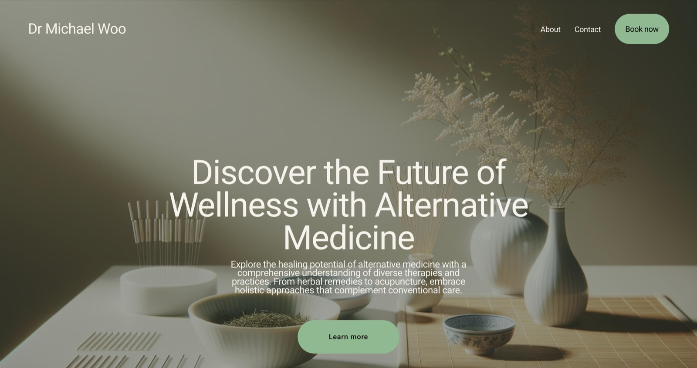

Building and comparing two website platforms for a first professional client
A personal website for an acupuncturist and naturopathic doctor, built and compared across two platforms.
Overview
An unforeseen project
Over the summer, the father of one of my old soccer teammates reached out to me with a request. As an acupuncturist and naturopathic doctor, he needed a personal website through which clients could learn more about him, his services, and the clinic he works at. Eager for my first professional project, I took on the challenge headfirst. One of the parts I was most excited for was learning how to work with clients. I was eager to get firsthand experience in interviews to understand exactly what my client wanted, how, and when he wanted it done.
Process
Diving in
I started by conducting an interview to understand my client’s needs. I wanted to clarify the exact purpose of the website before I began building it. We discussed everything from his preferred design, content, and layout, to where and how he wanted the site to be hosted.
Once I understood his vision, I began researching. I was torn trying to decide between building the website from scratch with HTML and CSS, or starting from a template. Eventually I decided on the latter, given the simplicity of the website. I spent hours choosing which platform to use, looking through dozens of options considering features and pricing plans before narrowing down to two choices: Carrd, a single-page website builder, and Squarespace. At this point, I got an idea:
What if I build a website on both platforms, and let my client decide which he liked best?
This solution creates perfect opportunity for me to get comfortable working with different building platforms (neither of which I was familiar with), while also giving my client options to choose from.
And so it began. I spent many hours building each version of the website, researching layout aesthetics, composing sample text, and customizing formatting features using HTML, CSS, and JavaScript. Once both versions were complete, I sent them to my client for feedback. I then scheduled a second meeting with him to discuss which platform to move forward with.

In the second meeting we walked through both websites page by page, and discussed which features he liked in both. We then pivoted to pricing. Carrd is a much cheaper platform than Squarespace, and if cost was an important factor for my client, I wanted to make sure he took that into account. After detailed discussion, Dr Woo decided to proceed with the Carrd version.
Over the past weeks I have continued my communication with my client to complete this project. As you can see, the website is still a work in progress as I’m still finalizing text and image details. I plan to publish the final version in the near future.
Outcome
My thoughts
I’m extremely grateful to have been asked to take on this project, as I’ve learned firsthand how to communicate and collaborate effectively with clients. I’m proud of the product I’ve created so far, and am excited to see my work make a real impact. Throughout this process, I surprised myself with the resilience and grit I showed while working through the challenges that arose. Overall, this project showed me that I’m ready to take on real-world projects and that I have the skills and knowledge to handle whatever comes my way.